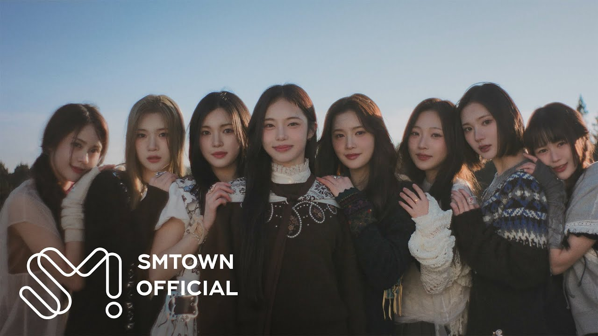
2025.02The Chase
몽환·신비 / 모험의 시작
HEARTS2HEARTS · THE 3RD MINI ALBUM PROPOSAL
A SHARED DREAM
서로 다른 꿈을 꾸었는데,
깨어 보니 같은 장면이 남아 있었다.
타이틀꿈에서 만나
사운드리퀴드 D&B × 트랜스 팝
비주얼쿨 블루 × 몽환 동화 × 기억 오류
사진: NME / Wonyoung Ki, 2026 · 콘셉트 배치 시뮬레이션
제안 보기↓ONE DECISION
01 / WHY NOW
공식 발매와 멤버 발언에서 반복된 강점은 남기고, 이미 사용한 장르·공간·정서를 다시 쓰지 않는다.

몽환·신비 / 모험의 시작
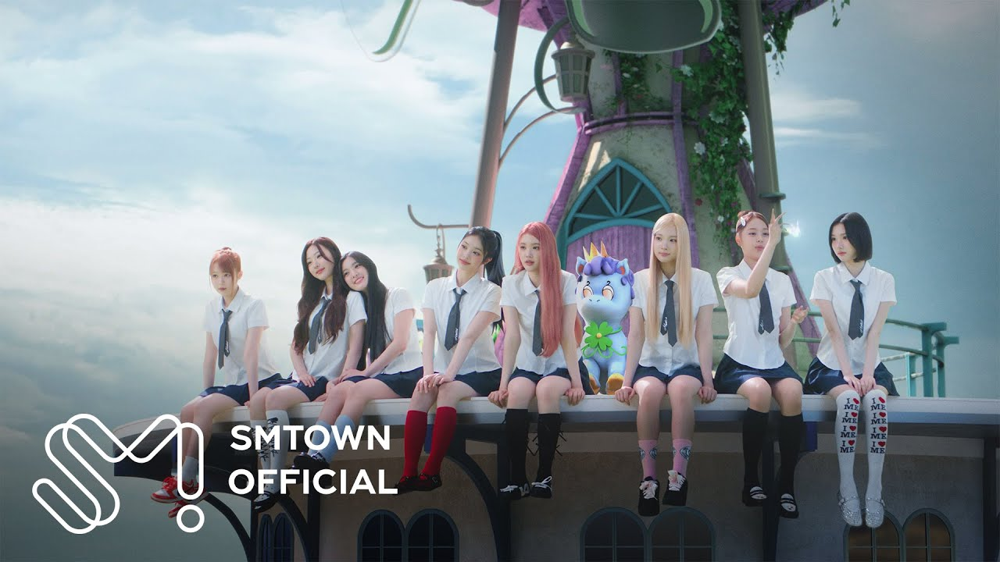
학교·요정 / 밝은 자신감
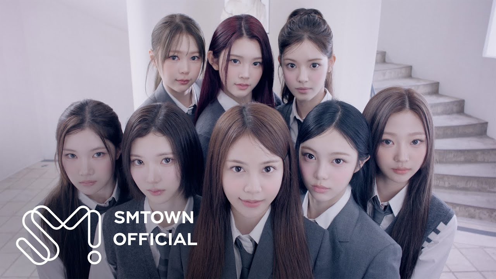
하우스·교복 / 정제된 시크
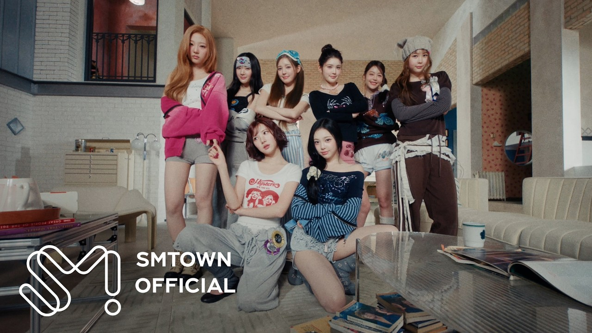
하트 공장 / 귀여운 반항
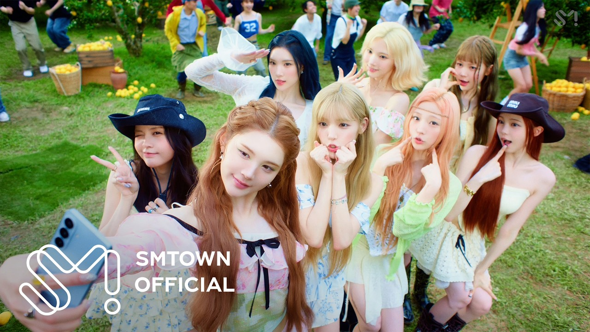
오키나와·수학여행 / 함께
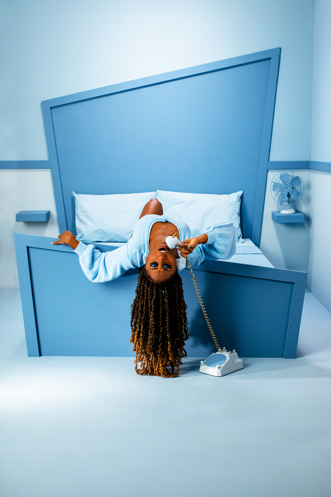
밤·실내 / 공유된 내면
공식 팀 정의의 ‘진심 어린 메시지’와 ‘더 큰 우리’, 1주년 인터뷰의 ‘당당함 속 솔직함’을 하나의 시각 사건으로 바꾼다.
〈FOCUS〉와 〈RUDE!〉에서 이미 하우스를 서로 다른 온도로 소화했다. 다음 타이틀은 리퀴드 드럼앤베이스와 트랜스의 상승감으로 8인 군무의 속도를 바꾼다.
FOCUS 공식 설명 ↗〈STYLE〉의 학교, 〈FOCUS〉의 하이틴, 〈Lemon Tang〉의 수학여행 뒤에는 밤의 방·온실·복도처럼 내면을 투사할 실내 공간이 필요하다.
Lemon Tang 공식 설명 ↗02 / VISUAL WORLD
유행을 그대로 복사하지 않는다. 2026의 세 흐름을 하츠투하츠의 몽환성, 솔직함, 8인 관계에 맞게 기능으로 바꾼다.
세트·소품·의상을 한 색 안에서 명도만 달리해 인물의 표정과 관계를 먼저 읽힌다.
참고: Jada & David Parrish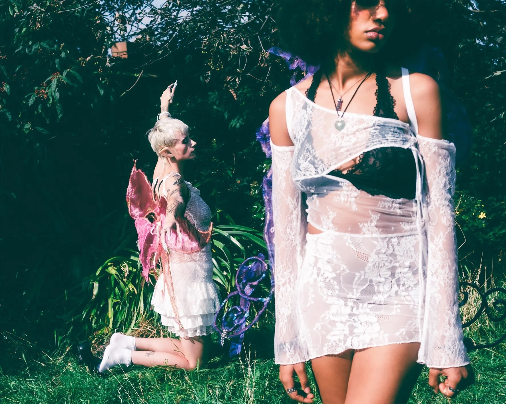
날개·왕관 같은 직설 소품은 빼고, 젖은 풀·안개·비현실적 빛만 남긴다.
참고: Original Magazine / Laura Braithwaite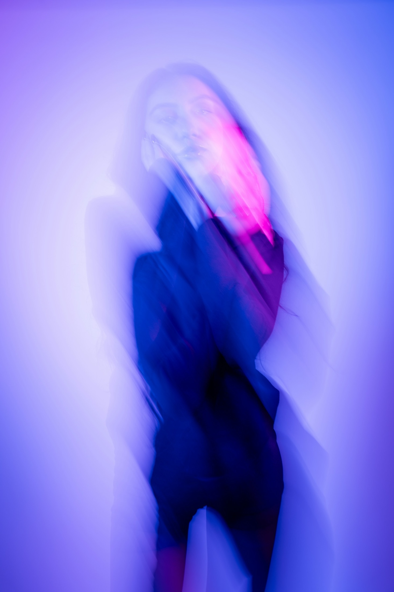
장노출, 이중 초점, 프레임 누락을 후반 장식이 아니라 서사의 증거로 사용한다.
참고: Jay Soundo / Unsplash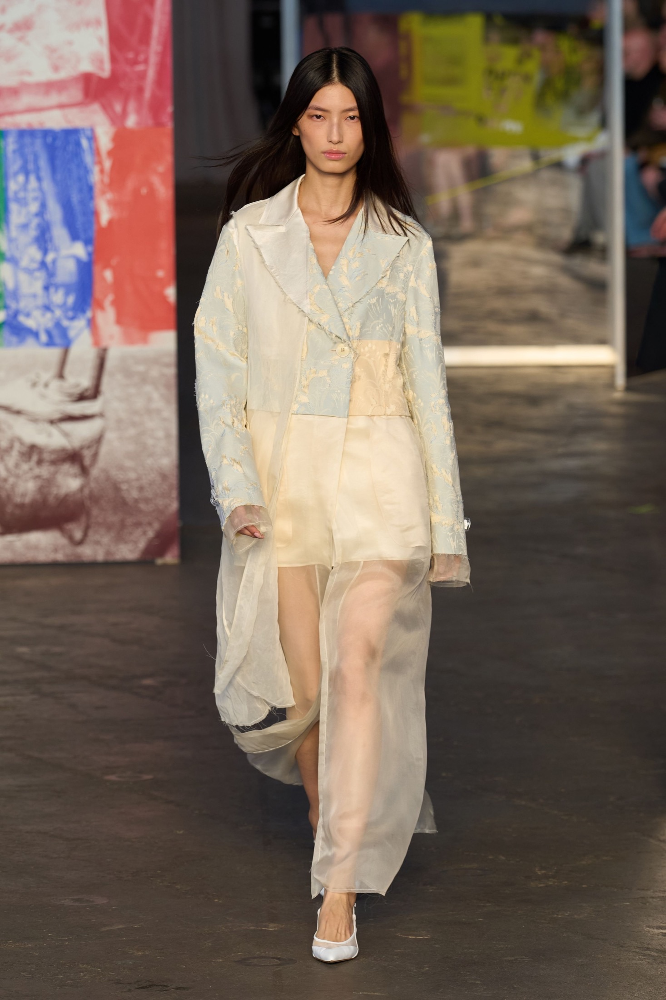
오간자와 얇은 니트 위에 포켓·스트랩·반사 실을 얹는다. 여덟 명이 같은 재료를 서로 다른 비율로 입는다.
참고: Jason Wu Collection SS26 / Vogue Runway한 컷에 초현실 장치 하나만 둔다. 모든 것을 이상하게 만들지 않는다.
분리된 꿈이 후렴마다 합쳐지도록 인원 구성을 음악 구조와 맞춘다.
익숙한 발레코어, 요정 코스튬, 사이버 Y2K는 〈The Chase〉와 경쟁하므로 쓰지 않는다.
03 / SOUND
연속된 하우스에서 빠져나오되 〈The Chase〉의 몽환성과 〈Lemon Tang〉의 밝은 에너지는 버리지 않는다. 리퀴드 드럼앤베이스의 속도 위에 트랜스 신스와 선명한 한국어 훅을 얹는다.
TITLE TRACK
“눈을 감으면 네가 먼저 와 / 같은 꿈의 문을 열어 놔”
장르리퀴드 D&B · 트랜스 팝
속도160 BPM / 하프타임 벌스
핵심 악기유리 벨 · 롤링 브레이크 · 코러스 패드
킬링 포인트8인 라운드 보컬 → 전원 유니즌
2025 전자음악 시장에서 드럼앤베이스가 큰 상승 장르로 집계되고 트랜스의 재부상이 관찰됐다. 단, 하투하 버전은 강한 베이스보다 멜로디와 합창을 앞세운다.
Beatportal 2025 결산 ↗벨 소리가 좌우로 이동하고, 마지막 한 박자에 모든 시계가 03:17로 멈춘다.
TRACK LIST
앰비언트 인트로 / 여덟 숨소리가 한 코드로 합쳐진다.
리퀴드 D&B / 서로 다른 꿈에서 같은 사람을 찾는다.
미드템포 R&B / 같은 색을 서로 다르게 기억한다.
브로큰 비트 팝 / 솔직한 마음을 농담처럼 건넨다.
트랜스 팝 / 밤에만 통하는 여덟 가지 약속.
클로즈 R&B / 꿈이 끝난 뒤에도 남은 온도를 확인한다.
04 / MUSIC VIDEO
CG로 꿈을 설명하지 않는다. 강제 원근 세트, 움직이는 벽, 거울, 장노출을 실제 촬영 장치로 설계한다.
00:00 — 00:13
여덟 개의 파란 방. 크기가 다른 침대와 문으로 강제 원근을 만들고, 알람이 모두 03:17에 멈춘다.
서로 다른 방의 알람이 한 시각에 멈춘다.
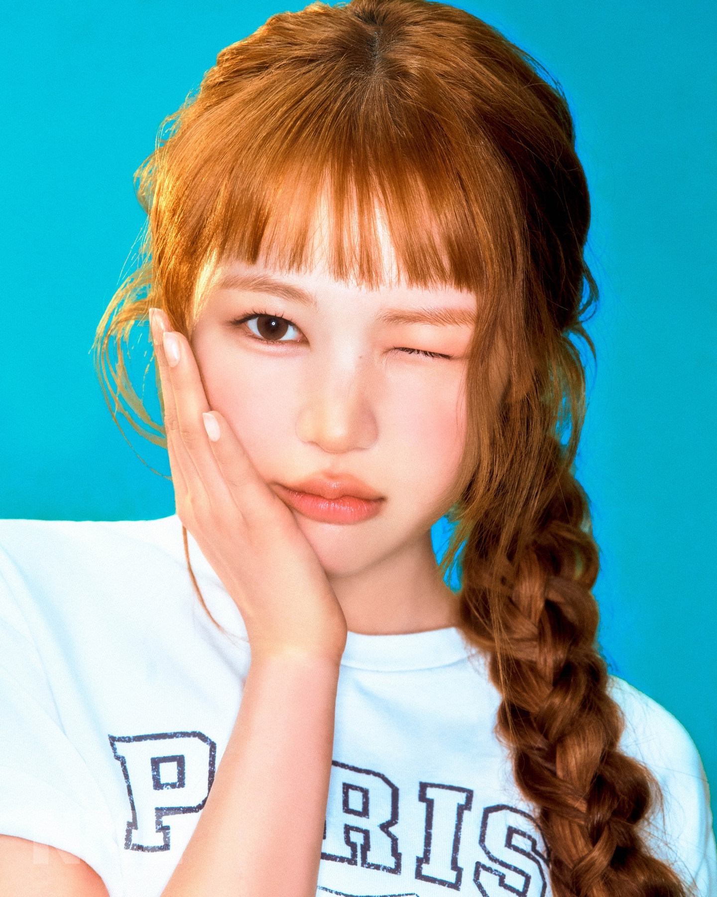
02첫 번째 꿈예온이 물속처럼 흔들리는 커튼을 통과한다.
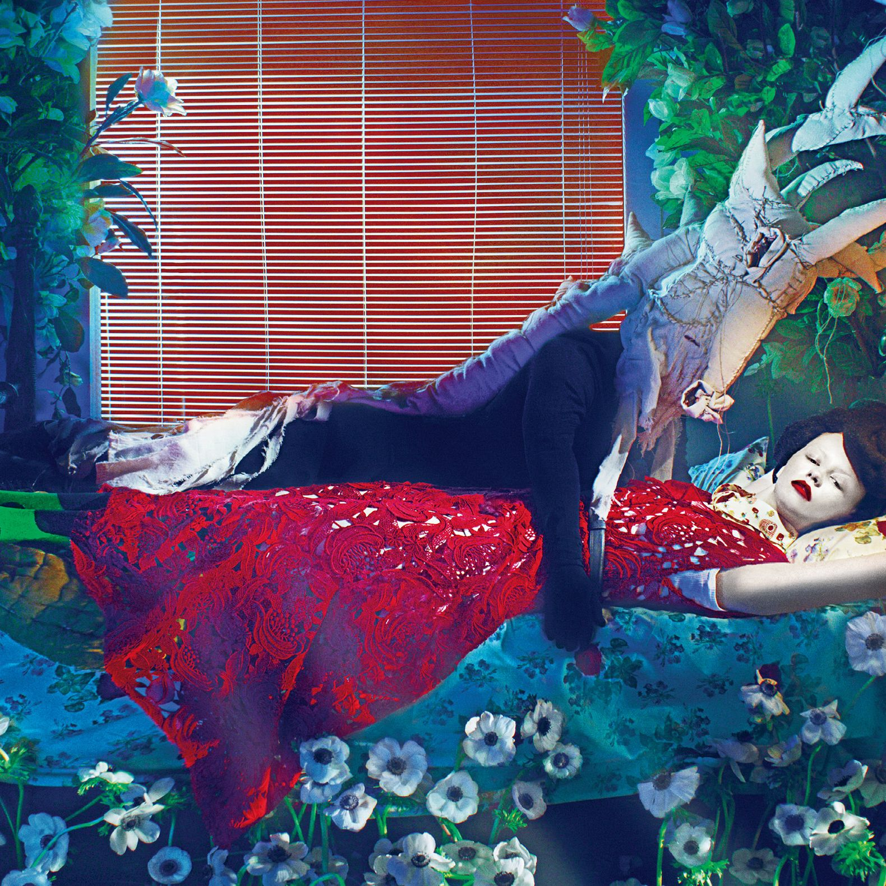
03밤의 온실각자의 소품이 같은 온실 바닥에 떨어진다.
JUUN과 IAN의 동작이 한 박자 늦은 잔상으로 남는다.
벽이 접히며 여덟 방이 하나의 원형 세트가 된다.
모두의 손에 같은 파란 실이 남고 설명 없이 끝난다.
DIRECTING PROTOTYPE
세트·빛·움직임을 고르면 실제 촬영 지시문과 화면이 함께 바뀐다.
파란 방 / 달빛 / 정지24mm 고정 카메라. 침대와 문 크기를 달리해 깊이가 틀어진 방을 만들고 인물만 정면으로 세운다.
05 / JACKET
ROOM VER.
1인과 2인 중심. 여덟 방의 배치와 소품은 다르지만 알람 시각, 파란 실, 침대 높이는 이어진다.
OUTLANDS VER.
4＋4와 8인 중심. 얕은 안개와 젖은 식물만 사용하고, 동화 의상·요정 소품은 제거한다.
ERROR VER.
개인 클로즈업 중심. 한 얼굴에 잔상은 한 번만, 반짝이는 장식은 눈·귀·손 중 한 곳만 둔다.
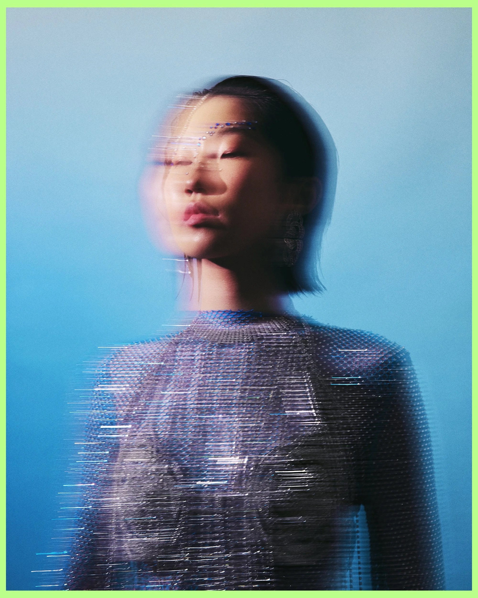
BEAUTY REFERENCE · PORTALS / KAIHAIR & MAKE-UP
피부결이 보이는 세미 매트유리알 피부 표현 배제
눈데님 블루 라이너 2~5mm8인 동일 형태 배제
입술본래 입술색 + 투명 광파란 립·실버 립 배제
헤어젖은 잔머리 또는 투명 실리본·왕관·별핀 배제
06 / 8 LOOKS
공식 멤버 소개의 춤선·보컬·악기·퍼포먼스·콘셉트 소화력·표현력을 스타일링 기능으로 번역했다. 사진은 NME 2026 화보를 활용한 배치 시뮬레이션이며 제안 착장의 결과물이 아니다.
발레 춤선을 살리는 긴 아이스 블루 코트와 직선 실루엣. 8인 프레임의 중심에서 옷자락만 움직인다.
긴 코트 · 실버 헤어핀 1개 · 낮은 포니테일맑고 청아한 보컬을 얇은 오간자 3겹과 진주빛 표면으로 번역한다. 실루엣은 가장 단순하게 둔다.
오간자 셔츠 · 펄 귀걸이 · 투명 네일올라운더의 안정성을 비대칭 레이어로 보여준다. 정면은 셔츠, 측면은 드레스처럼 읽히는 한 벌.
변형 셔츠 드레스 · 비대칭 단 · 코발트 양말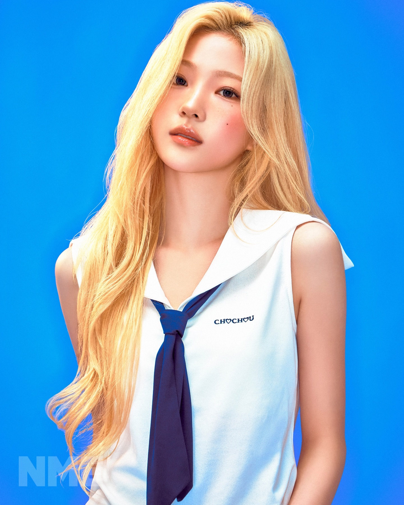
매력적인 음색과 악기 경험을 반사 실 니트와 얇은 금속 장식으로 연결한다. 소리가 날 수 있는 장식은 하나만.
반사 실 니트 · 드럼 키 펜던트 · 젖은 웨이브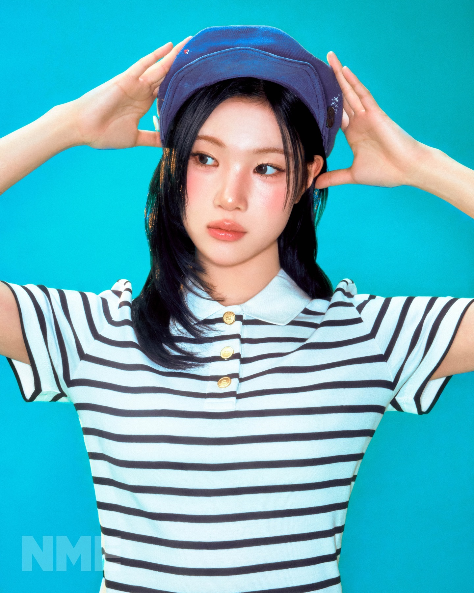
넓은 퍼포먼스 스펙트럼과 허스키 보이스를 바이어스 컷 드레이프와 넓은 바지로 보여준다.
와이드 팬츠 · 긴 드레이프 · 흑청 아이라인콘셉트 소화력을 투명한 기능성 베스트와 단정한 셔츠의 충돌로 잡는다. 표정 변화가 가장 잘 보이는 낮은 칼라.
투명 베스트 · 흰 셔츠 · 눈꼬리 실버 점섬세한 표현력과 밝은 에너지를 코발트 한 점과 분리형 소매로 강조한다. 후렴에서 색이 처음 보인다.
분리형 소매 · 코발트 이너 · 블루 마스카라부드럽고 편안한 보컬을 파우더 블루 니트와 얇은 후드로 번역한다. 뮤직비디오 첫 목소리와 첫 문을 맡는다.
얇은 후드 니트 · 회청색 스커트 · 무광 피부멤버 강점 근거: SM Entertainment 공식 멤버 소개, 2025.02.05 · 사진: NME / Wonyoung Ki, 2026
07 / OBJECT & ROLLOUT
MAIN EDITION / 꿈 기록철
반투명 트레이싱 필름 8장을 멤버 순서대로 겹치면 단체 사진과 03:17이 완성된다. 수집을 위해 관계를 쪼개지 않고, 전원 세트를 기본으로 둔다.
포토북112쪽 / 방 → 온실 → 아침
핵심 구성잔상 필름 8장 전원 세트
포토카드개인 1종 + 2인 1종
재질무광지 · 트레이싱지 · 은박 1도
설명 없이 같은 시각을 가리키는 여덟 알람 이미지.
8 정지 이미지멤버별 방에서 발견된 물건과 한 문장.
8 세로 필름파란 방의 벽이 접혀 온실이 되는 콘셉트 필름.
45초 필름잠든 방, 같은 숲, 기억 오류 재킷 순차 공개.
3 사진 세트팬이 선택한 두 색을 겹쳐 꿈 기록 카드를 만든다.
웹 생성기8인 라운드 보컬이 한 줄씩 쌓이는 아카펠라 티저.
24초 사운드여덟 방이 하나의 원형 세트로 접히는 본편.
본편 공개원형 카메라 한 대로 8인 대형 변화를 끊지 않고 촬영.
퍼포먼스 필름08 / ROLE FIT
SM Creative Visual 공고의 업무를 페이지 구조 자체로 증명한다.
팀 서사와 발매 흐름에서 ‘공유된 내면’이라는 다음 장을 도출했다.
WHY NOW → VISUAL WORLD쿨 블루, 실제 공간과 불가능한 흔적이라는 단일 규칙으로 화면과 패키지를 묶었다.
HERO → JACKET → OBJECT버전별 인원, 렌즈, 시점, 조명, 배제 요소까지 촬영 가능한 언어로 적었다.
ROOM / OUTLANDS / ERROR공식 멤버 강점을 8개의 실루엣·재료·뷰티 포인트로 각각 번역했다.
8 LOOKS티저, 웹 생성기, 사운드, 퍼포먼스 필름이 같은 03:17 서사를 쌓도록 설계했다.
D−21 → D＋03PRIMARY SOURCES
하츠투하츠의 다음 장은 더 큰 세계가 아니라,
서로의 안쪽에서 발견한 같은 장면이다.